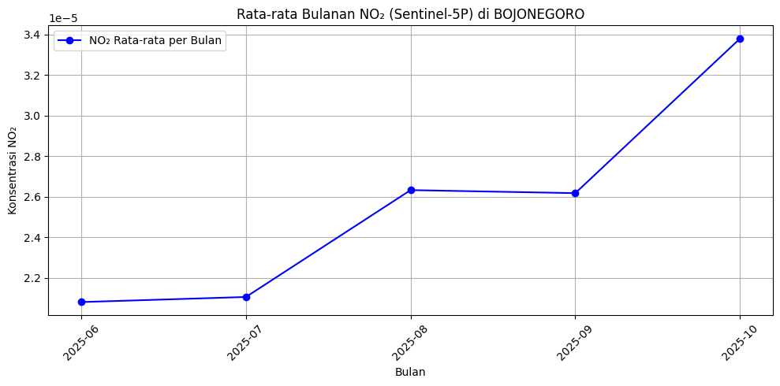

Pengumpulan Data#
import openeo
import pandas as pd
import matplotlib.pyplot as plt
import warnings
warnings.filterwarnings("ignore")
connection = openeo.connect("openeo.dataspace.copernicus.eu").authenticate_oidc()
Visit https://identity.dataspace.copernicus.eu/auth/realms/CDSE/device?user_code=GIXN-WJGB 📋 to authenticate.
[##################################---] ⌛ Authorization pending---------------------------------------------------------------------------
KeyboardInterrupt Traceback (most recent call last)
Cell In[3], line 1
----> 1 connection = openeo.connect("openeo.dataspace.copernicus.eu").authenticate_oidc()
File ~\AppData\Roaming\Python\Python312\site-packages\openeo\rest\connection.py:621, in Connection.authenticate_oidc(self, provider_id, client_id, client_secret, store_refresh_token, use_pkce, display, max_poll_time)
617 _log.info("Trying device code flow.")
618 authenticator = OidcDeviceAuthenticator(
619 client_info=client_info, use_pkce=use_pkce, display=display, max_poll_time=max_poll_time
620 )
--> 621 con = self._authenticate_oidc(
622 authenticator,
623 provider_id=provider_id,
624 store_refresh_token=store_refresh_token,
625 )
626 print("Authenticated using device code flow.")
627 return con
File ~\AppData\Roaming\Python\Python312\site-packages\openeo\rest\connection.py:351, in Connection._authenticate_oidc(self, authenticator, provider_id, store_refresh_token, fallback_refresh_token_to_store, oidc_auth_renewer)
339 def _authenticate_oidc(
340 self,
341 authenticator: OidcAuthenticator,
(...) 346 oidc_auth_renewer: Optional[OidcAuthenticator] = None,
347 ) -> Connection:
348 """
349 Authenticate through OIDC and set up bearer token (based on OIDC access_token) for further requests.
350 """
--> 351 tokens = authenticator.get_tokens(request_refresh_token=store_refresh_token)
352 _log.info("Obtained tokens: {t}".format(t=[k for k, v in tokens._asdict().items() if v]))
353 if store_refresh_token:
File ~\AppData\Roaming\Python\Python312\site-packages\openeo\rest\auth\oidc.py:914, in OidcDeviceAuthenticator.get_tokens(self, request_refresh_token)
912 while elapsed() <= self._max_poll_time:
913 poll_ui.show_progress()
--> 914 time.sleep(sleep)
916 if elapsed() >= next_poll:
917 log.debug(
918 f"Doing {self.grant_type!r} token request {token_endpoint!r} with post data fields {list(post_data.keys())!r} (client_id {self.client_id!r})"
919 )
KeyboardInterrupt:
Kriteria Data yang Diambil#
Data yang digunakan merupakan data NO₂ (Nitrogen Dioksida) dari satelit Sentinel-5P (S5P) melalui layanan Copernicus OpenEO.
Wilayah Pengambilan Data#
Data diambil untuk wilayah Kabupaten Bojonegoro, dengan batas koordinat sebagai berikut:
Titik |
Longitude |
Latitude |
|---|---|---|
1 |
111.84013944486253 |
-7.112176997696622 |
2 |
111.84013944486253 |
-7.201964283327371 |
3 |
111.93244545164555 |
-7.201964283327371 |
4 |
111.93244545164555 |
-7.112176997696622 |
5 |
111.84013944486253 |
-7.112176997696622 |
Area ini membentuk sebuah poligon yang mewakili area observasi di wilayah Bojonegoro.
entang Waktu Pengambilan Data#
Data diambil dari 1 Juni 2025 hingga 19 Oktober 2025.#
Dengan langkah-langkah ini, diperoleh data rata-rata harian konsentrasi NO₂ di wilayah Bojonegoro selama periode Juni–Oktober 2025.
aoi_geojson = {
"type": "Polygon",
"coordinates": [
[
[111.84013944486253, -7.112176997696622],
[111.84013944486253, -7.201964283327371],
[111.93244545164555, -7.201964283327371],
[111.93244545164555, -7.112176997696622],
[111.84013944486253, -7.112176997696622]
]
]
}
s5post = connection.load_collection(
"SENTINEL_5P_L2",
temporal_extent=["2025-06-01", "2025-10-19"],
spatial_extent={"west": 111.84013944486253, "south": -7.201964283327371, "east": 111.93244545164555, "north": -7.112176997696622},
bands=["NO2"],
)
# 4. Mask nilai negatif (data invalid)
def mask_invalid(x):
return x < 0
s5p_masked = s5post.mask(s5post.apply(mask_invalid))
# 5. Agregasi temporal harian
daily_mean = s5p_masked.aggregate_temporal_period(period="day", reducer="mean")
# 6. Agregasi spasial (rata-rata dalam AOI)
daily_mean_aoi = daily_mean.aggregate_spatial(geometries=aoi_geojson, reducer="mean")
# 7. Jalankan batch job dan hasilkan file CSV
job = daily_mean_aoi.execute_batch(out_format="CSV")
# 8. Unduh hasil job
results = job.get_results()
results.download_files("no2_bojonegoro_post")
0:00:00 Job 'j-2510210402374f0ca6b808b8854aa2e7': send 'start'
0:00:13 Job 'j-2510210402374f0ca6b808b8854aa2e7': created (progress 0%)
0:00:19 Job 'j-2510210402374f0ca6b808b8854aa2e7': created (progress 0%)
0:00:25 Job 'j-2510210402374f0ca6b808b8854aa2e7': created (progress 0%)
0:00:34 Job 'j-2510210402374f0ca6b808b8854aa2e7': running (progress N/A)
0:00:44 Job 'j-2510210402374f0ca6b808b8854aa2e7': running (progress N/A)
0:00:56 Job 'j-2510210402374f0ca6b808b8854aa2e7': running (progress N/A)
0:01:13 Job 'j-2510210402374f0ca6b808b8854aa2e7': running (progress N/A)
0:01:32 Job 'j-2510210402374f0ca6b808b8854aa2e7': running (progress N/A)
0:01:57 Job 'j-2510210402374f0ca6b808b8854aa2e7': running (progress N/A)
0:02:27 Job 'j-2510210402374f0ca6b808b8854aa2e7': running (progress N/A)
0:03:05 Job 'j-2510210402374f0ca6b808b8854aa2e7': finished (progress 100%)
[WindowsPath('no2_bojonegoro_post/timeseries.csv'),
WindowsPath('no2_bojonegoro_post/job-results.json')]
blh = connection.load_collection(
"ECMWF_ERA5_LAND_MONTHLY",
temporal_extent=["2025-06-01", "2025-10-19"],
spatial_extent={"west": 111.8401, "south": -7.2019, "east": 111.9324, "north": -7.1121},
bands=["blh"] # boundary layer height
)
daily_blh = blh.aggregate_temporal_period(period="day", reducer="mean")
daily_blh_aoi = daily_blh.aggregate_spatial(geometries=aoi_geojson, reducer="mean")
job_blh = daily_blh_aoi.execute_batch(out_format="CSV")
results_blh = job_blh.get_results()
results_blh.download_files("blh_bojonegoro_post")
# Baca data
df = pd.read_csv("no2_bojonegoro_post/timeseries.csv")
df["date"] = pd.to_datetime(df["date"])
# 11. Buat kolom bulan (YYYY-MM)
df["month"] = df["date"].dt.to_period("M")
# 12. Hitung rata-rata NO2 per bulan
df_monthly = df.groupby("month", as_index=False)["NO2"].mean()
# 13. Visualisasi hasil
plt.figure(figsize=(10,5))
plt.plot(df_monthly["month"].astype(str), df_monthly["NO2"], marker="o", color="blue", label="NO₂ Rata-rata per Bulan")
plt.title("Rata-rata Bulanan NO₂ (Sentinel-5P) di BOJONEGORO")
plt.xlabel("Bulan")
plt.ylabel("Konsentrasi NO₂")
plt.xticks(rotation=45)
plt.grid(True)
plt.legend()
plt.tight_layout()
plt.show()

Data Dapat diunduh#
Dataset: Dataset NO2 di Bojonegoro